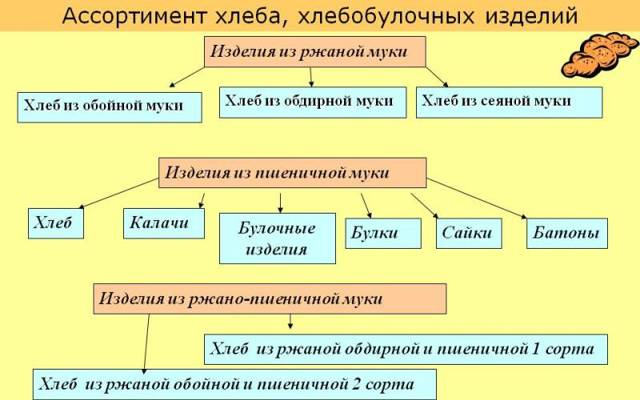
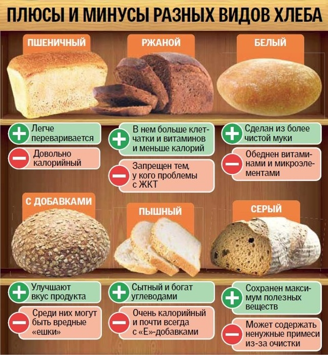

Классифицируется эта продукция по разным критериям:
1. виду и сорту продуктов, составляющих основу изделия (муки);
2. по используемому рецепту (простые, улучшенные с дополнительным введением яиц, сахара, пряностей, сдобные);
3. по применяемому способу приготовления (подовой либо выпеченный в специальной форме/формовой);
4. по приданной изделию форме (батон, булка, калач и другие виды продукции);
5. по правилам отпуска покупателю: весовой либо тучный;
6. по типу упаковочного материала: в индивидуальной бумажной упаковке или полиэтилене, нарезной в индивидуальной упаковке бумажной или полиэтилене, без упаковки;
7. по весу изделия;
8. по содержанию влажности;
9. национальная продукция (чиабатта, лаваш, матнакаш);
10. диетический продукт.
К диетпродукции относят ХБИ:
1. йодосодержащие — хороши для больных атеросклерозом и людей с нарушенной функцией щитовидной железы;
2. бессолевые — для людей с болезнями почек;
3. малобелковые — выпекаются для людей с нарушением белкового обмена и серьезными патологиями почек;
4. с заниженной кислотностью — для больных ЯБЖ (язвенной болезнью);
5. с низким количеством углеводов, выпускают для диабетиков, больных ревматоидными заболеваниями и лиц с избыточным весом тела;
6. с включением лецитина (для людей с нервным истощением, ожирением, заболеванием печени).
Иногда виды хлеба подразделяют по виду:
1. белый, коричневый, серый, черный, с добавками;
1. зерновой, ржаной, цельнозерновой, конопляный;
1. хрустящий, плоский, объемный/пышный.
Цвет хлеба определяется видом муки, которая пошла на его выпечку. Например, всем знакомый «Бородинский» хлеб — это смесь ржано-пшеничная, с преобладанием ржаной муки. Каждый вид имеет свои достоинства и недостатки. Пшеничный хлеб — это тот, что мы привыкли называть «белым». Пшенично-ржаной — это «серый» хлеб, а ржаной — «черный».

Название сорта ХБИ зависит:
1. от качества и вида муки, использованной для его производства (иногда хлеб называют просто «пшеничный I-го сорта»);
1. от рецепта — это «именные» хлеба (Молочный, Ситный или Горчичный, Купеческий или Бородинский);
1. от формы изделия (Ромашка);
1. иногда в названии изделий отражается разработчик рецепта (Ставропольский или Орловский);
1. сейчас модно подчеркивать национальные особенности продукции (Армянский, Минский, Рижский).
Виды хлеба:
Пшеничный. Обычные белые «нарезные» батоны выпекаются из муки высшего сорта с добавлением дрожжей, соли, сахара, часто растительного масла. Иногда к ним добавляется яичный или молочный порошок.
Ржаной. Строго говоря, чисто ржаного хлеба на наших прилавках практически нет. Из чистой ржаной муки пекут только отдельные энтузиасты, и такой хлеб довольно дорог. В массовом производстве к ржаной муке добавляют пшеничную. Хлеб получается ржано-пшеничный. Такой можно увидеть под марками «Дарницкий», «Донской», «Украинский», «Солдатский» и другими. Чаще всего это буханки коричневого цвета с черной верхней коркой.
«Бородинский». Буханка по форме. По содержанию также ржаной хлеб с добавлением пшеничной муки, ржаного солода и пряностей. Обязательно — кориандра. Часто посыпается семенами кориандра сверху.
Цельнозерновой. Хлеб, выпекаемый из цельнозерновой муки, то есть муки, которую сделали из зерна с оболочкой. Такая мука более полезна, чем мука высшего сорта, в ней сохраняется больше полезных веществ.
Бездрожжевой. Очень популярный хлеб, приготовляемый с использованием закваски. Надо понимать, что дрожжи в любом случае присутствуют и в закваске тоже, только дикие, а не добавленные на производстве. Без присутствия дрожжей хлеб не поднимется. Хлеб на закваске часто делается с добавлением разных видов муки, туда могут добавляться различные семена, злаки. Рецептов такого хлеба множество.
Лаваш. Армянский тонкий лаваш — один из немногих видов хлеба, в производстве которого не используются дрожжи. Он делается из муки, воды с добавлением соли. Выпекается в тандыре. Есть также толстый лаваш, грузинский. Так условно называют целое семейство грузинских хлебобулочных изделий. В него входят хлеб шоти, мадаури и другие. Они делаются с использованием дрожжей.
Пита. Пресная лепешка, внутрь которой можно положить овощи, мясо. С такими лепешками подают шаурму, хумус. Пита очень распространена на Ближнем Востоке, в Средиземноморье.
Маца. Пресный хлеб родом из Израиля. Его делают без дрожжей, используют в качестве ритуального, но едят и в обычной жизни.
Тортилья. Мексиканские тонкие лепешки без дрожжей, пекутся с добавлением кукурузной муки.
Багет. Французский хлеб с очень хрустящей корочкой и очень легким воздушным мякишем.
Чиабатта. Итальянский хлеб из пшеничной муки, знаменитый своей хрустящей корочкой и пористостью.
Бейгл. Западный аналог наших бубликов, но более пресный и воздушный. Бейглы, как и бублики, часто посыпают маком, иногда кунжутом.